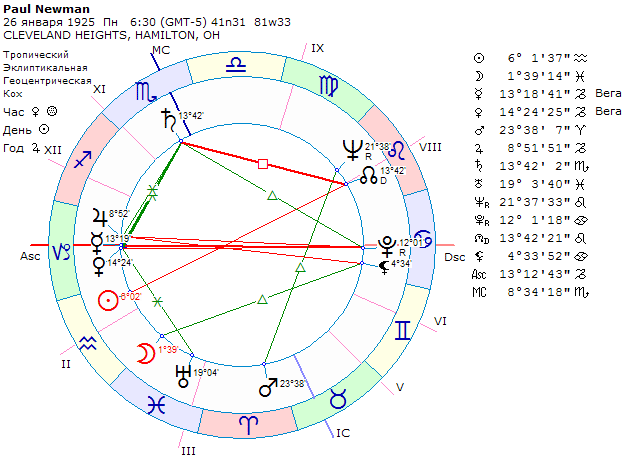
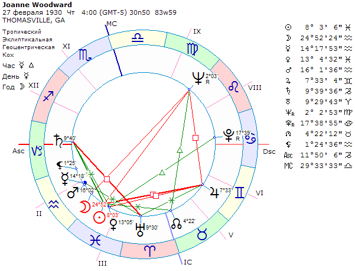
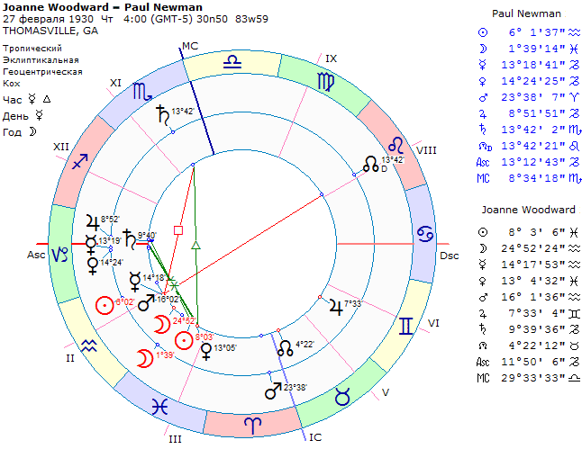
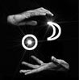

Предисловие
Тема этой статьи подсказана, как это часто бывает, дискуссией, в которой оппонент утверждал, что расчет темпераментов является первым условием при определении астрологической совместимости. Моя же точка зрения базировалась на приоритете рассмотрения аспектов между планетами обоих партнеров.
О своей позиции
Прежде, чем я начну расплетать этот узелок, который, как оказалось, был завязан британским астрологом Джоном Фроули, скажу пару слов о том, почему собственно меня заинтересовала эта тема. Дело в том, что за темой аспектов стоит основание астрологической парадигмы. Это парадигма не меняется тысячелетия и её можно выразить одной фразой: "Все что внизу, подобно тому, что находится наверху". Эта парадигма, предполагает, что главным и непреложным основанием трактовки любого гороскопа является анализ астрономического положения планет на небе в момент рождения и их проекций в гороскопе. Это краеугольный камень, начало точки отсчета. Рассмотрение совместимости гороскопов не исключение, оно тоже начинается с рассмотрения планетарных картин, которые, в данном случае, сравниваются между собой.
При этом нужно подчеркнуть важную мысль. Критикуя подход Фроули к синастрии, я вывожу на главное место анализ взаимодействия двух планетарных картин, однако и для темпераментов в синастрии тоже есть место. Хотя, конечно, и не такое гипертрофированное и нездоровое как у Фроули.
Дело в том, что для любого астролога не является новостью и редкой жемчужиной драгоценных знаний, о которой нужно с придыханием говорить, факт того, что Асцендент и Десцендент в любом гороскопе находятся в знаках противоположных стихий. Это говорит о том, например, что проявление стихий в гороскопе вашей второй половины должно иметь подобие со стихией знака Десцендента и/или стихией управителя Десцендента в вашем гороскопе1. Пример хода рассуждений будет виден в процессе разбора синастрий в этой статье. Анализ соответствия стихий сужает количество вариантов при поиске подходящей для вас второй половины и является дополнением общего анализа синастрической планетарной фигуры.
Метод предложенный Д.Фроули на первое место ставит исключительно расчет темпераментов, в ходе его работы выдвигается идея о том, что "глубинная взаимосвязь" между людьми определяется темпераментами. При этом расчет темпераментов в том виде, который делает британец, является производной от положений планет в домах и знаках системой, которая основана на субъективном числовом выражении 4-х качеств (тепла, холода, влажности и сухости) в гороскопе. Систем расчета темпераментов, вероятно, не один десяток, но в этой статье, речь идет о системе изложенной самим же Д.Фроули2, которую он использует для расчета темперамента в синастриях.
Изобретателями же темпераментов вообще, а не использования их в синастрии, считают, чаще всего, античных врачей Гиппократа и Галена, которые использовали их с той целью, для которой они и изобретались - в медицинской практике3, а философу Аристотелю приписывают введение качеств тепла, холода, влажности и сухости, которые органично перешли в астрологическую практику. В этой статье, обратите ваше внимание, рассматривается темпераменты исключительно применительно к расчетам синастрии. Само значение темпераментов или, говоря астрологически, а не психологически, силы стихий в гороскопе требует как минимум отдельной статьи, поэтому в этом материале не рассматривается.
Примеры Фроули
Итак, одним из основных современных апологетов "темпераментной" теории в синастрии является британский астролог, неотрадиционного направления Джон Фроули. Именно в его книге "Подлинная астрология" в главе 15. "Синастрическая астрология" представлена методика, согласно которой "глубинные взаимосвязи" гороскопов партнеров определяются их темпераментами.
Так давайте повнимательнее посмотрим, какую идею Джон Фроули пытается продвинуть в своей книге?
Обычно, прежде чем приступить к любому делу, Д.Фроули создает некий образ "астролога-модерниста", который использует в своей работе невероятное количество аспектов, огромные орбисы, всевозможные астероиды и, конечно, сопровождает это все псевдопсихологическими рассуждениями. Этому "модернисту" Фроули противопоставляет астрологов "традиционной направленности", и, разумеется, себя самого. По этому беспроигрышному, всегда гарантирующую победу нокаутом сценарию пишется и глава 15.
"..Они (подразумеваются современные астрологи "модернистского" направления) приводят карты каких-то Ромео и Джульетты, а затем перечисляют планетарные взаимодействия между ними в доказательство большой любви. И все идет как по маслу, пока не задаемся вопросом: какие аспекты были между картой Ромео и картой Флавии, Клавдии и т.д.. Излюбленные примеры Эдуард VIII и Уоллис Симпсон, Фрейд и Юнг. Можно спросить: почему у них какая-то горстка аспектов привела к столь глубоким взаимоотношениям, а, скажем, у меня ни с кем таких отношений не было, хотя аспектов было и больше?"
Во-первых, чтобы встать на позиции астрологии, а не демагогии, нам бы понадобились гороскопы не только Ромео о Джульетты, но и Клавдии, Флавии и т.д. Это трудно? Если трудно, то не нужно их упоминать, это пустые слова. Во-вторых, понять почему в этом ряду стоят Ромео и Джульетта (Флавия, Клавдия), Эдуард VIII и Уоллис Симпсон я могу, но для чего здесь упомянута пара "мужчина-мужчина" (Юнг-Фрейд) не ясно. Думаю, что это печальное влияние современной Британии. На тему синастрии у меня есть такая шутка: "Вопрос: Совмещение их карт показало: его Марс в точном соединении с ее Венерой, между его Солнцем и ее Луной — секстиль, между ее Солнцем и его Луной — трин. При всем при этом он не проявляет никакой инициативы в развитии их отношений. Как такое может быть? Ответ: он живёт в Москве, она в Гватемале." Если такой ответ покажется неполным, то будет уместно сказать, что процесс возникновения любви не зависит ни от аспектов, ни от темперамента, есть в нашем мире нечто высшее, где законы астрологии не имеют силы. В сутки рождения Адольфа Гитлера родилось около 100 000 человек, примерно 1/12 из них имела Асцендент в Весах как у Адольфа, однако лишь он вошел в учебники истории как злой гений. И никто из астрологов не паникует по этому поводу (возможно, до прочтения этой информации). Может это происходит оттого, что гороскоп является потенциалом возможностей, которые человек может реализовать в зависимости от условий окружающей среды, наследственности и духовного опыта воплощенной души?
Тем временем, Фроули отнесся к вопросу, заданному самому себе, весьма серьезно. И нашел ответ! Оказывается секрет "глубоких взаимоотношений", кроется в темпераментах гороскопов, а именно - в том, чтобы качества одного, например, сухость и холод, уравновешивались качествами темперамента другого - теплом и влагой.
Для того, чтобы окончательно убедить свою астрологическую паству в том, что расчет темперамента в синастриях первичен, господин Фроули идет на отважный эксперимент, он предлагает фактический материал, конкретный жизненный пример, а именно точные гороскопы двух известных в мире людей, актеров Пола Ньюмена и актрисы Джоанны Вудворд.
Пол Ньюмен и Джоанна Вудворд
Пример, надо сказать, приведен хороший, эти люди действительно доказали своей судьбой, что между ними существовали глубокие чувства, настоящая любовь. Представьте себе двух известных актеров Голливуда, которые прожили вместе и не разводились в течении 50 лет и у которых было трое общих детей. Познакомились они в 1958 году на съемках фильма "Долгое жаркое лето", это перевернуло судьбу обоих, Полу пришлось развестись со своей первой женой Джеки Витти. До ухода Пола Ньюмена из-за тяжёлой болезни в возрасте 83 лет (2008 год) они были вместе и это значит очень много. Оба много снимались, оба не раз получали самые престижные актерские премии - "Эмми", "Оскар", "Золотой Глобус" и т.д.
Взглянем на их гороскопы:
 Вот их совмещенный гороскоп, для упрощения картины исключены высшие планеты:
Что мы видим? Солнце Пола в знаке Луны Джоанны, а Солнце Джоанна не только в одном знаке с Луной Пола, но и в соединении в пределах 7° (!). Мало того, Луна, будучи хозяйкой 7-го дома в гороскопе Пола Ньюмена, символизирует его вторую половину! Невозможно обойти вниманием этот факт! Соединение Луны Пола Ньюмена, символизирующую образ её супруги с Солнцем Джоанны Вудвард редкое явление.
Что пишет по этому поводу Джон Фроули?
 "..На первый взгляд, синастрия странная. Тесных аспектов не больше, чем у любой другой случайной пары.."
Это первый фокус Фроули. Может ли быть у "случайной пары" взаимный обмен знаками между Солнцами и Лунами? Как часто управитель 7-го дома одного из партнеров находится в соединении с Солнцем партнера? Это не трудно, кстати, посчитать. Приблизительно, конечно, но мы же должны представлять себе вероятность такого попадания. Для того, чтобы Джоанна встретила Водолея с Луной в Рыбах и Десцендентом в РАКЕ (каждый раз такое возможно в одном из 12-ти случаев), ей бы понадобилось "просеять" 12*12*12 = 1728 человек. Причем тут речь идет не о половых партнерах, а о тех, с кем возникают более-менее близкие отношения и человек становится кандидатом на брак. Это невероятно.
Перед тем как произвести главный фокус - вытащить кролика из шляпы, господин Фроули делает отвлекающий маневр - накрывает шляпу платком и пускает туман. Сначала британец рассеивает внимание читателей, пускаясь в обсуждение деталей синастрии:
Другими словами, "первый взгляд" Фроули в упор не замечает светил в обоих гороскопах. Что случилось со зрением британца? Однако, через страницу текста Фроули, наконец, замечает очевидное, но реагирует на это весьма своеобразно:
Вот это и был тот самый кролик, которого нужно было вытащить из шляпы. Браво! Зрители могут поаплодировать ловкости рук. А ведь налицо явная попытка неприятный для себя факт преуменьшить, уничтожить и свести к нулю. В руках фокусника Фроули и Солнце и Луна в обоих гороскопах вдруг превратились в места слабости, которые играют в синастрии второстепенную роль. Интересные вещи открывает людям миссионер Фроули. Оказывается, светила в гороскопах двух всемирно известных актеров "места слабости", а их взаимное соединение по знакам не представляет собой ничего особенного, так, пустячок - "..по крайней мере, понимание и сопереживание слабостям друг друга.."
Можно посоветовать Фроули провести эксперимент, чтобы проверить слабость Солнца в Водолее, в знаке его изгнания. Нужно выйти в феврале днем на улицу и зафиксировать размер и яркость светила. Затем ночью, в ясную погоду, попробовать разглядеть какую-либо планету в знаке своей силы. Затем нужно сравнить увиденное и убедиться, что Солнце больше и ярче любой из планет, а поскольку астрология интерпретирует отражение небесной реальности на Землю, сказать, что в каком-либо гороскопе Солнце заслуживает внимания только как "место слабости" не представляется возможным. Если оторваться от интересного эксперимента и вернуться к Ньюмену, то можно невооруженным взглядом заметить, что его Солнце находится в 1 доме, на пике своей акциденциальной силы.. Вот ещё один трюк Фроули, уже в стиле демагогической попытки доказательства своей правоты:
Примерно такой же спич обращен и к тому, почему Вудворд не прельстилась другими мужчинами.
Гороскопы Лоретты Янг, Дорис Дей, Джейн Расселл как и гороскопы гипотетических Клавдий и Флавий для Ромео в книге Д.Фроули не приводятся, читатель, видимо, должен поверить британскому джентльмену на слово.
Я не верю в слова мистера Фроули и поэтому решил проверить сказанное:
1. Не понятно с какой стати упомянута Лоретта Янг. Данных о их возможной, по мнению Фроули, любовной связи отсутствуют. Красавица из Голливуда? Этого достаточно для того, чтобы ввернуть её имя в астрологическую книгу? К тому же Лоретта была на 12 лет старше Пола и на 17 лет старше Джоанны. Стартовые позиции для безумной страсти, извините, несколько иные. Гороскоп Лоретты Янг, кстати говоря, известен точно. 6.01.1913, 15:30, Солт-Лейк Сити, Асц 23°15 Близнецов. Эта карта весьма интересна тем, что в ней наблюдается новолуние в знаке КОЗЕРОГА, то есть перед нами чистый образ козерожьей красоты середины 20-го века. Посмотрите на фото.
Совмещение гороскопов Пола Ньюмена и Лоретты Янг показывает, что по светилам у них есть взаимосвязь только между Солнцем Лоретт в Козероге и Луной Пола в Рыбах. Взаимного обмена знаками светил, как у Пола с Джоанн Вудвард не наблюдается. К тому же ярко выраженный КОЗЕРОГ Лоретта Янг (в этом знаке у неё Солнце, Луна и Юпитер) совершенно не подходит к образу жены Пола Ньюмена, который показан управителем 7 дома (который в РАКе), Луной в РЫБАХ. Увы, РАК и КОЗЕРОГ диаметрально разные знаки зодиака.
2. Упомянута Дорис Дэй. Между ними Дорис и Полом, как и между Лоретт и Полом никаких связей не было, жили люди в разных семьях, на работу ходили в разные места, однако Фроули нужно взять какой-то пример. Родилась она 3 апреля 1924 года около 5 вечера в Цинциннатти. Я нашел вариант гороскопа на 16:30, с Асцендентом в 26° ДЕВЫ, однако не буду доверять точности этого гороскопа 100%. Гороскоп этой американской певицы и актрисы, как и гороскоп Лоретты Янг примечателен новолунием (!) в одном знаке, в данном случае, в ОВНЕ. Вот вам пример чистой овенской красоты образца середины прошлого века. Совместим их гороскопы и увидим, что есть благоприятное взаимодействие между Солнцем Пола в ВОДОЛЕЕ и Луной Дорис в ОВНЕ. Взаимного обмена знаками между светилами не наблюдается. Отлично смотрится соединение Венеры Ньюмена и Марса Дорис. Кроме того, бросается в глаза тот факт, что Марс в ОВНЕ Пола находится вблизи Солнца Дорис, что, учитывая сверхогненность натуры Дорис можно трактовать как мину замедленного действия в их гипотетических отношениях. Если бы у них было пересечение по ролям в кино, то шансы на кратковременный роман имелись. Но, конечно, огненный образ чистого ОВНА Дорис категорически непохож управителя Десцендента в гороскопе Пола, Луну в РЫБАХ, это делает такой союз невозможным в длительной перспективе. Жизнь выдающегося ОВНА Дорис Дэй изобиловала переменами, а 4 брака за её спиной представляют собой обычный голливудский стандарт.
3. Третьей в "списке Фроули" указана Джейн Расселл, её гороскоп известен точно. 21.06.1921, Bemidji, Beltrami, MN, 6:15, Асц 22° РАКА. Как и предыдущие два варианта этот вариант вымышленный, в реальности её судьба и судьба Ньюмена не пересекались. Это из той же серии "он живет в Москве, а она в Гватемале". Асцендент Джейн, однако, настраивает на добрый лад, ведь у Пола Ньюмена Десцендент в РАКЕ. Дальнейшее рассмотрения двух гороскопов показывает, что между их Лунами и Солнцами нет ярких аспектов, трин между Луной Ньюмена во 2° РЫБ к Солнцу Рассел слабый, поскольку дневное светило Джейн находится в 30° БЛИЗНЕЦОВ, а Вода и Воздух разные стихии. Трин между Венерами из знака КОЗЕРОГ В ТЕЛЕЦ, конечно, плюс. Может они хорошо отзывались о ролях друг друга с чисто художественной точки зрения.
Безусловно, главным претендентом на сравнение её гороскопа с гороскопом Джоанны Вудвард является первая жена Ньюмена Джеки Витте, она же Jacqueline (Jackie) Witte. К сожалению, в интернете отсутствует дата её рождения, мне удалось найти только сообщение о её возможном рождении в сентябре 1929 года. От брака с ней с 1949 по 1958 год у Пола появилось трое детей, столько же родится впоследствии от брака с Джоанной. Джеки Витте, в отличие от голливудских звезд, не бросается в глаза Фроули, о ней и биографы вспоминают только лишь для того, чтобы упомянуть, что у Ньюмена был первый брак. Удалось найти фотографию, где молодой Пол Ньюмен счастливо проводит время с первой женой и сыном. Скорее всего, на фото между ними находится их первый сын, Скотт.
Мы видим, что каждая женщина из списка Фроули при более тщательном рассмотрении не может конкурировать с Джоанн Вудвард и сами примеры выглядят искусственно как надувная женщина из секс-шопа. Сам принцип разбора аспектов в синастрии, который демонстрирует Фроули показывает либо незнание предмета либо сознательное извращение рассмотрения планетарных картин в гороскопе. Светила, в первую очередь, сравнивают со светилами, а, например, планеты мужской и женской чувственной природы Марс и Венеру с аналогичными планетами партнера. Нет необходимости сразу хвататься за чей то Юпитер или Сатурн и создавать кучу, вроде этой: "..Лоретта Янг (чьи Солнце и Луна сильно взаимодействуют с Юпитером Ньюмена).."
И ещё один пустячок
В этой цитате Д.Фроули возвещает миру квинтэссенцию своего синастрического учения:
..Надо взглянуть глубже. Если глубинной взаимосвязи не обнаружится, никакие аспекты, сколь угодно тесные, не помогут. Аспекты показывают способ взаимосвязи. Если бы их не было, даже два идеально совместимых человека не смогли бы друг с другом общаться. Они были бы как два обитателя ночлежки: один использует комнату днем, а другой – ночью, причем они никогда не пересекаются. В синастрии аспекты отвечают на вопрос «как»; мы же сначала должны разобраться с «почему». Здесь надо отталкиваться от темперамента. В данном случае мы наблюдаем равновесие темпераментов.
Ньюмен: перевес сангвинического начала (воздушного – горячего и влажного).
Вудворд: перевес меланхолического темперамента (земного – холодного и сухого).
Как уже было нетрудно заметить, словам джентльмена Фроули не следует слепо доверять. Поэтому я проверил подсчет темпераментов в карте Пола Ньюмена и Джоанны Вудвард. В книге "Подлинная астрология" о которой идет речь, эти расчеты отсутствуют. Расчет сделан в отдельной статье "Пример расчета темпераментов по методу Фроули. Материал потребовал максимальной аккуратности и строжайшего следования тем критериям и правилам, которые установил сам Джон Фроули. Вот итог моего исследования:
Другими словами, никакого "равновесия" в этой паре не наблюдается. Не ясно, что именно хотел сказать Фроули в главе "Синастрическая астрология", которую теперь вполне логично переименовать в "Сатирическую астрологию".
Руслан Суси
14.10.2010, Хельсинки
Примечания
1 Кратко: под подобием темперамента я имею в виду, что Солнце, Луна или, хотя бы, управитель гороскопа партнера должен попасть в знак Десцендента вашего гороскопа или в 7 дом или в знак, где находится управитель Десцендента вашего гороскопа или, например, сделать аспект к Десценденту или управителю Десцендента вашего гороскопа, находясь в знаке родственной стихии. Родственные стихии: ОВЕН - ЛЕВ - СТРЕЛЕЦ, ТЕЛЕЦ - ДЕВА - КОЗЕРОГ, БЛИЗНЕЦЫ - ВЕСЫ - ВОДОЛЕЙ, РАК - СКОРПИОН - РЫБЫ. Этого достаточно, чтобы кандидатура второй половины рассматривалась на длительную перспективу взаимоотношений. Чем больше таких подобий, тем лучше. Совершенно необязательно при этом ворошить весь гороскоп, поднимая, например, все хилегиальные точки + пробуждать некоего "Владыку Гороскопа", достаточно обратить внимание на то, что напрямую имеет отношение к теме. Для более подробного рассмотрения темпераментов в синастрии требуется отдельная статья.
2 Система расчета темпераментов Д.Фроули. Используются 4 фактора гороскопа : 1) Асцендент (орб аспектов 3-4°) и его Управитель, 2) Солнце, 3) Луна, 4) Владыка Генитуры (Владыкой гороскопа, по мнению Фроули, является эссенциально более сильная планета в гороскопе). Далее используют эту схему:
| Сатурн |
Восточный Западный |
Холодный и влажный Сухой |
| Юпитер | Восточный Западный |
Горячий и влажный Влажный |
| Марс | Восточный Западный |
Горячий и сухой Сухой |
| Венера | Восточная Западная |
Горячая и влажная Влажная |
| Меркурий | Восточный Западный |
Горячий Сухой |
| Луна | 1-я четверть 2-я четверть 3-я четверть 4-я четверть |
Горячая и влажная Горячая и сухая Холодная и сухая Холодная и влажная |
| Солнце | Весна (Овен, Телец, Близнецы) Лето (Рак, Лев, Дева) Осень (Весы, Скорпион, Стрелец) Зима (Козерог, Водолей, Рыбы) |
Горячее и влажное Горячее и сухое Холодное и сухое Холодное и влажное |
| Восходящий Лунный Узел | Как Юпитер | |
| Заходящий Лунный Узел | Как Сатурн |
затем нужно провести астрологическо-математические операции, а именно: рассмотреть положение каждого из 4 факторов в знаке и смешать качества знака и планеты. Получить в результате избыток или недостаток качеств. Кроме того нужно учесть аспекты планет в пределах 3-4° (причем не только зодиакальные, но и мунданные :-))) и антисы с орбом 1°. В итоге этой работы вы получите что-то вроде приблизительной оценки степени влажности и температуры каждого из 4 факторов и сделаете вывод о преобладании того или иного качества. Из-за этой горы цифр, тем не менее, неоднократно слышится призыв Фроули: "Не надо погружаться в детали!"
* В статье Пример расчета темпераментов по методу Фроули продемонстрирована практическая попытка использования этой системы.
3
О Гиппократе
Гиппократ (греч. Ἱπποκράτης, лат. Hippocrates) жил в районе около 460 - 377 до н. э. на греческом острове Кос. Считается «отцом медицины», которая в то время выделилась из философии в отдельную науку. Он заложил основу гуморального подхода к лечению, выделив четыре типа «красиса» («смешения» - греч.), в организме четырех жидкостей (соков): крови, желтой и черной желчи и слизи. Каждая жидкость имеет свои свойства, например, кровь - тепло, слизь - холод, желтая желчь - сухость, черная желчь - влажность. Преобладание одной из жидкостей по Гиппократу определяет состояние организма и его склонность к тем или иным заболеваниям. Гиппократ владел астрологией, поэтому его вправе называть и астрологом.
О Галене
Античный медик Гален (греч. Γαληνός) жил в районе 130 — 210 г. до н.э., родился в Пергаме, на территории Малой Азии, что соответствует, кстати, современной Турции. Отличный хирург, работал врачом в школе гладиаторов. С 34 лет становится придворным врачом императора Марка Аврелия и переезжает в Рим. В Древнем Риме в честь врача Галена чеканились монеты. Введение темпераментов в практику не считается его главным достижением, кроме того, не только Гален занимался этой темой. Именно в Риме впервые в обиход вошел термин "темперамент" он же temperamentum ("надлежащее соотношение частей, соразмерность"), это стало следствием простой замены греческого слова "красис" (смешение) на его латинский эквивалент. Тем не менее, Галена выделяют как первого, кто дал развернутую классификацию темпераментов, основанную на гуморальном методе Гиппократа. Классификация Галена включала 13 типов. С его точки зрения, преобладание, например, желтой желчи (лат. chole - «холе») свидетельствует о холерическом темпераменте, крови {sanguis - «сангвис») указывает на сангвинический темперамент, избыток черной желчи (melanos chole - «меланос холе») — о меланхолическом, а слизи (phlegma — «флегма») — о флегматическом темпераменте. Гален владел астрологией, поэтому его можно назвать и астрологом. Психологические характеристики типов темперамента, со временем расширялись под влиянием медицины, философии и, говоря о современном этапе, под влиянием физиологии и психологии.
- ТЕМПЕРАМЕНТЫ И АСТРОЛОГИЧЕСКАЯ СОВМЕСТИМОСТЬ ДЖОНА ФРОУЛИ -